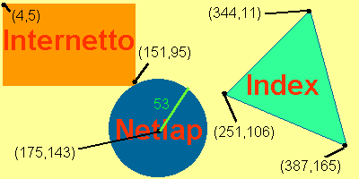

Gyakran találkozhatunk a weben olyan megoldással,
hogy egy bizonyos kép részei linkként viselkednek.
Mint ahogy azt itt is láthatjuk, az egyes televíziók
logói linkként viselkednek. A kívánt hatást nem úgy értük el, hogy 3 képet
egymás mellé tettünk, és külön-külön linket definiáltunk rá, hanem egy
összefüggõ kép bizonyos területeit jelöltük meg.
A kliens oldali térképek (Image Map)
létrehozása a különbözõ szerkesztõprogramokkal elég egyszerû (lásd Frontpage HTML szerkesztõ program
leírása). Most
nézzük meg, hogy a szerkesztõprogramok nélkül, pusztán HTML
kódokkal hogyan hozhatunk létre ilyen térképeket:
A Bevezetõ tag: <MAP>
Paraméter: NAME= a térkép neve (ezzel a
névvel fogunk a térképre hivatkozni az IMG paraméteren
belül)
Magát a térképdefiníciót az AREA tagek
között kell megadnunk.
Paraméterei:
SHAPE= alak
A lehetséges alakok:
rect:
téglalap alakú terület circle: köralakú terület poly: sokszöggel leírható terület
COORDS= koordináták
A terület méretét (határoló pontjainak
koordinátáját) állíthatjuk be. A kordinátarendszer
(0,0) pontja a kép bal felsõ sarka lesz.
Az értékeket egy listával adhatjuk meg, ahol a
listaelemeket vesszõ választja el. Természetesen a
különbözõ alakok esetében más más jellemzõket
adunk meg ebben a listában.
RECT: a téglalap bal
felsõ, illetve jobb alsó koordinátái
pl. SHAPE=RECT COORDS="15,30,150,300"
CIRCLE: középpont koordinátái, és a sugár
pl. SHAPE=CIRCLE COORDS="50,50,25"
POLY: A határoló pontok koordinátái
pl. SHAPE=POLY COORDS="50,70,150,240,370,120"
HREF= URL
Az adott területhez rendelt link URL-je.
NOHREF
Ha a területhez nem tartozik hivatkozás, akkor
ezzel a taggel jelölhetjük
Nézzük, hogy az alábbi ábrához hogyan lehet kliens oldali
képet szerkeszteni.

A képet egy tetszõleges grafikai program segítségével
elkészíthetjük. Megkönnyíti a helyzetünket, ha a program
képes arra, hogy az egér aktuális koordinátájának
pozícióját le lehet kérdezni.(segítségképpen bejelöltem a képen, hogy
melyik pontnak mi a koordinátája. A koordinátarendszer 0,0 pontja a kép
bal felsõ sarka. Az x koordináta balról jobbra, az y koordináta fentrõl
lefele növekszik.)
<IMG src="imagemap.gif"
border="0" width="400" height="200"
usemap="#terkep"> Beillesztjük a képet, ami 400 képpont széles és
200 képpont magas. A usemap paraméterrel jelezzük, hogy a képhez tartozik
egy kliens oldali térkép, amelynek az a neve, hogy terkep. A # jelet ne
felejtsük el az elejére kitenni.
<MAP NAME="terkep"> Itt adjuk meg a térkép definicióját.
<AREA HREF="http://www.internetto.hu/"
ALT="Internetto" SHAPE="RECT"
COORDS="4,5,151,95"> Az elsõ terület amit megadunk egy téglalap lesz
(SHAPE="RECT") Téglalap esetén a jellemzõ koordináta a bal felsõ,
és a jobb alsó koordináta, ami jelen esetben a (4,5) és (151,95) koordináta.
A href paraméterben meg kell adnunk a területhez tartozó URL-t.
<AREA HREF="http://www.netlap.hu/"
ALT="Netlap" SHAPE="CIRCLE"
COORDS="175,143,53">
A második terület a kör lesz. (SHAPE="CIRCLE") A kör jellemzõ
koordinátái a kör középpontja (175,143) és a sugara (53).
<AREA HREF="http://www.index.hu/"
ALT="Index" SHAPE="POLY" COORDS="251,
106, 344, 11, 387, 165"> A harmadik területet egy sokszögvonal segítségével
tudjuk megadni. (SHAPE="POLY") Az egyes pontok koordinátáit írjuk
egymás után. (251,106,344,11,387,165) A kezdõponot nem kell mégegyszer
megadnunk.
</MAP> Lezárjuk a térkép definiciós részét.
Feladat:
Készítsd el a következõ képhez tartozó térképet, ahol
Te adhatod meg a területekhez tartozó linkeket.